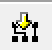
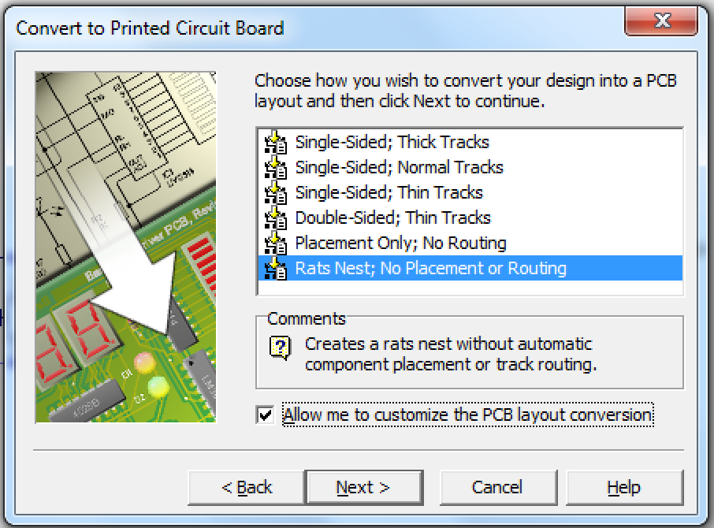
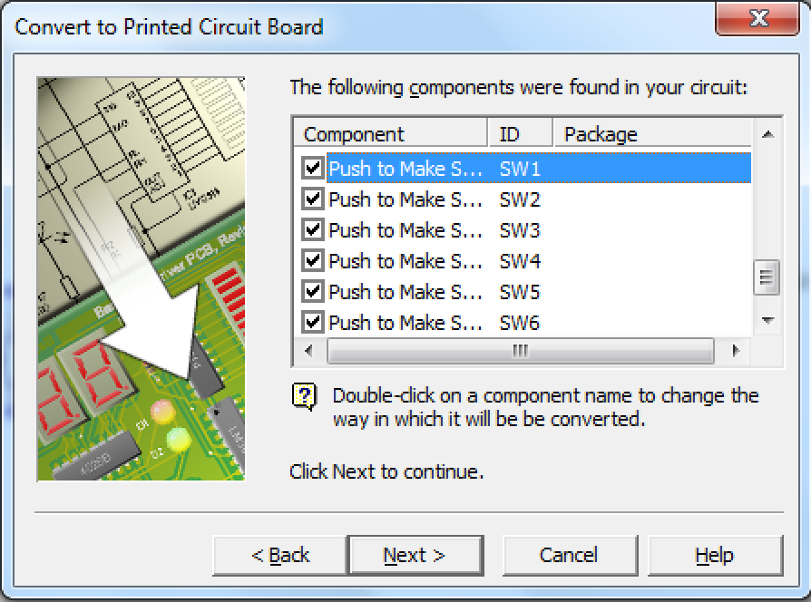
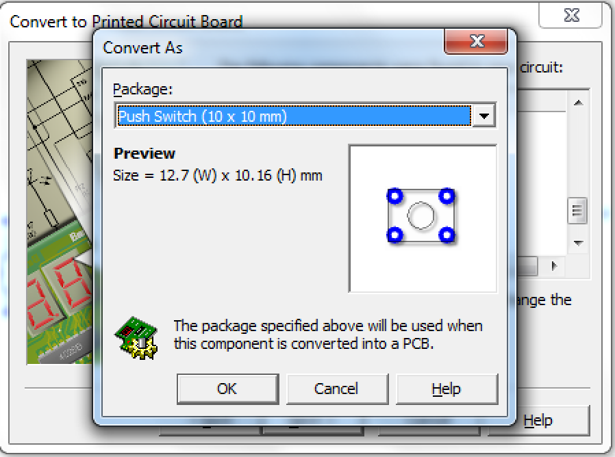
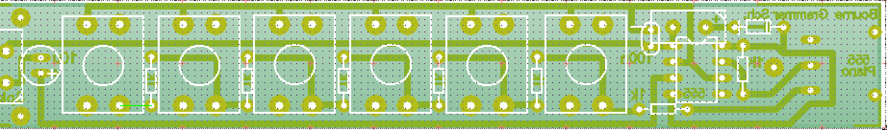

555 Piano
Design the PCB
Design It
- You're going to have a go at creating a PCB of your circuit.
- Click the button that looks like this 
- Click Next and then choose Rats Nest; No Placement or Routing and check the box for allowing customisation.

- Next and Next again
- For each of the PTM switches, you need to make sure you're choosing 10x10 switches. Double click the switch in the list and change it.
 
- Now you can click through the remaining menus and convert your circuit to a PCB
- You'll need to try and place the components so that the green connecting wires don't overlap. You might find it's easier to delete the rectangular board to begin with.
- Once you are happy with the placement, try and connect up the components with tracks.
- Here's an example, but try and design your own.

Badge It - Silver
- Add the image of the PCB to your write up.
- Explain any placements that you found tricky to solve.
- Upload your work to BourneToLearn.com
Design the case
- You're going to have a go at creating a case to house your instrument.
- Here are some tips to help you:
- The PCB is 20 mm by 150 mm and 2 mm thick.
- You can use fly leads to extend the buttons, the speaker or potentiometer to increase the flexible of your design.
- You either Solidworks or 2D Design to make your case.
- You may need a pencil and paper sketch to get you started.
- You need to think about the parts that are going to fit together to make your instrument.
- Think about ergonomics, how are you going to play your 'sweet' tunes?
Design It
- We're going to use a program called Solidworks to design our instrument.
- Solidworks is a 3D CAD program.
- Hopefully you have already had lots of experience with Solidworks last year, so for this recap section of the project, you'll just be creating a couple of the Solidworks parts and assembling them.
- In Solidworks you start by creating a 2D sketch. You can then convert this to a 3D part. You can then join parts together to make a 3D assembly.
Try It
- In Solidworks you have to ensure all your drawings are fully defined.
- This means that the software must know the dimensions of every line you draw.
- Quite often the software is able to work out a dimension of a line, from others you have provided.
- Look at the videos below.
- Video of building two parts of the case
- Video of mating
- Video of converting Solidworks to 2D Design for laser cutting
Badge It - Gold
- Upload a screenshot of some parts for your instrument and to BourneToLearn.com.
Badge It - Platinum
- Upload a screenshot of your fully designed instrument to BourneToLearn.com.